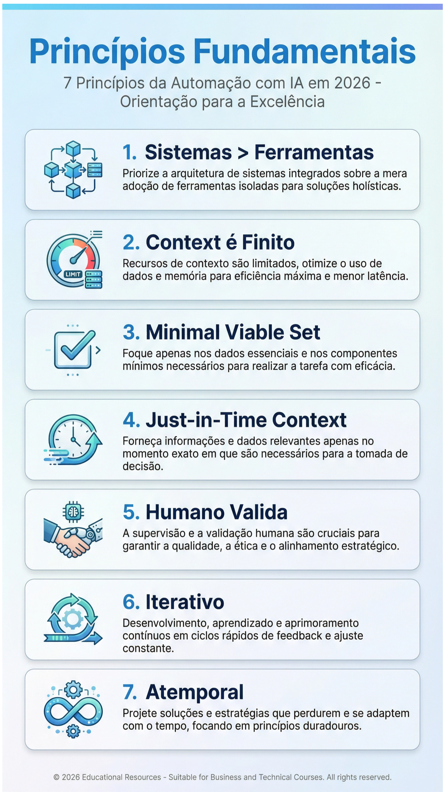
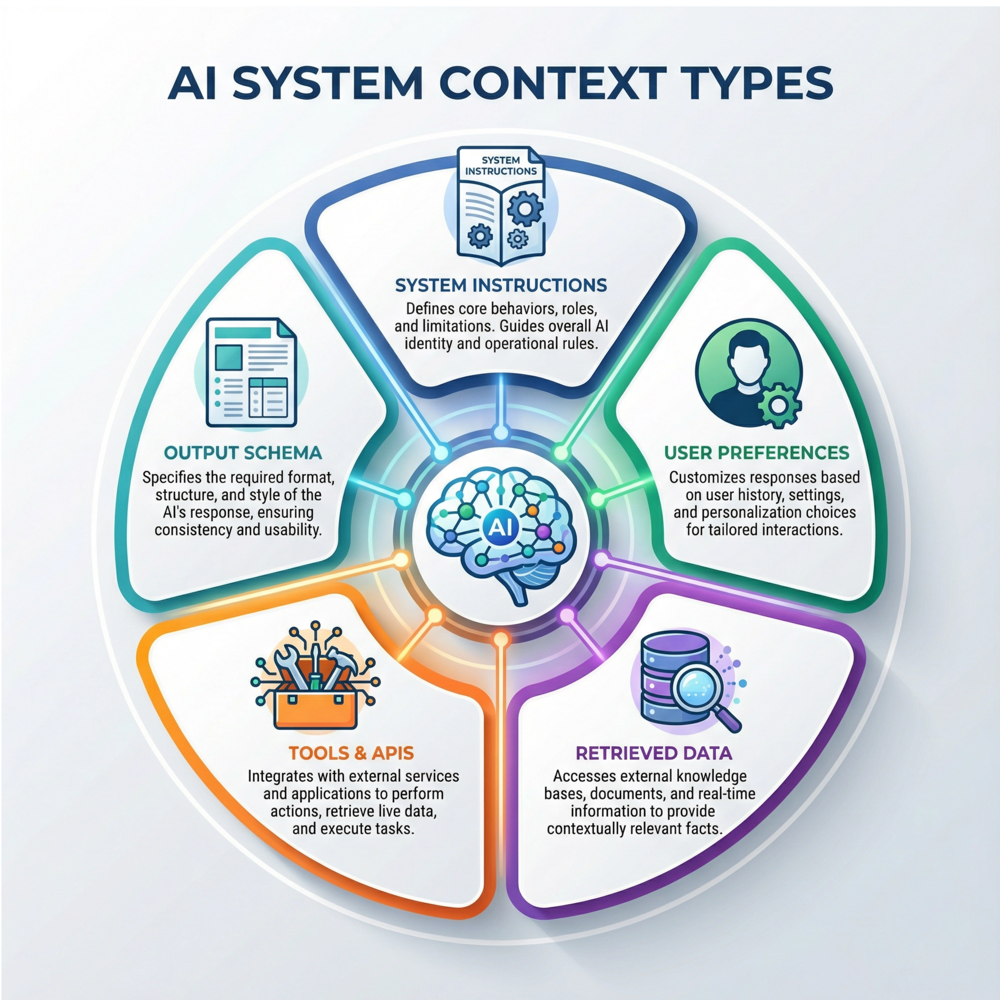

Introducao a Automacao com IA
Construa uma base de conhecimento solida e atemporal, focada em principios e sistemas

Alfabetizacao em IA
O Que Realmente Acontece?
Antes de automatizar qualquer coisa, precisamos entender a natureza da ferramenta. Modelos de Linguagem Grandes (LLMs) como GPT-4, Claude 3 e Gemini 2.5 nao "pensam" ou "entendem" como humanos. Eles sao motores de previsao de tokens extremamente sofisticados.
Conceito-chave
A IA preve a proxima palavra (ou token) mais provavel em uma sequencia, com base nos padroes que aprendeu em um vasto conjunto de dados de treinamento. Ela nao possui crencas, consciencia ou intencao.
Comportamentos que precisamos gerenciar:
Confiante e Errada
A IA pode gerar informacoes incorretas com a mesma autoridade de informacoes corretas
Esquecimento de Contexto
A "memoria" da IA e limitada a janela de contexto da conversa atual
Mistura de Informacoes
Pode combinar fatos de diferentes fontes de forma incoerente ("alucinacao")
Exercicio Pratico
- 1. Abra seu assistente de IA preferido
- 2. Peca para ele explicar um topico que voce domina profundamente
- 3. Identifique onde a resposta e generica, onde inventa detalhes e que informacao crucial faltou
- 4. Anote: "Que contexto faltou para a resposta ser perfeita?"
Pensamento em Sistemas
A Saida do "Chat"
O erro mais comum de quem comeca em IA e ficar preso na interface de chat. Para automacao, precisamos pensar em fluxos e sistemas.
O modelo mental e sempre:
Entrada
O que inicia o processo? (email, formulario, mensagem)
Processamento
Que decisoes e transformacoes precisam acontecer?
Saida
Qual e o resultado final? (resposta, tarefa, registro)
Principio Norteador
Pare de pensar em "conversar com a IA" e comece a pensar em "desenhar um fluxo onde a IA executa uma etapa especifica".
Exercicio Pratico
- * Mapeie um processo simples do seu dia a dia (ex: responder a um pedido de orcamento)
- * Descreva: Qual e a Entrada? Quais sao as etapas do Processamento? Qual e a Saida?
- * Identifique o maior Gargalo: Onde o processo e mais lento ou mais propenso a erros?
A Evolucao
De Prompt a Context Engineering
Prompt Engineering
A arte de escrever instrucoes claras para a IA executar uma tarefa unica.
Context Engineering
A ciencia de projetar sistemas que fornecem a IA a informacao certa, no momento certo, de forma continua.
Para automacao, o prompt e apenas uma parte do contexto. A verdadeira habilidade esta em gerenciar todo o ecossistema de informacoes que a IA acessa.

Estrutura de um Prompt Fundamental:
"Voce e um assistente de marketing especializado em midias sociais."
"Seu objetivo e criar tres opcoes de posts para o Instagram."
"O post e sobre o lancamento de um curso de IA. Publico-alvo: gestores de PMEs."
"Nao use girias. Tom profissional. Maximo 280 caracteres."
"Responda com uma lista numerada."
Exercicio Pratico
Pegue a tarefa que voce mapeou no Modulo 2. Escreva um "Prompt Mestre" para a etapa de "Processamento" que voce identificou, usando a estrutura acima.
Memoria e Seguranca
Os Pilares da Confianca
Dois dos maiores desafios da IA em negocios sao o esquecimento e o risco.
Memoria: O Conceito de RAG
Retrieval-Augmented Generation (RAG) e uma tecnica para dar uma "memoria externa" a IA. Em vez de depender apenas de seu treinamento, a IA aprende a consultar uma base de conhecimento confiavel antes de responder.
Conceito Simples: E como ensinar um estagiario a sempre consultar o manual da empresa antes de responder a um cliente.
Exercicio Pratico (Conceitual)
- 1. Crie uma pasta no seu computador chamada
BASE_DE_CONHECIMENTO - 2. Adicione documentos que representem seu negocio: PDF com precos, descricao de servicos, FAQ
- 3. Mentalize: "Para qualquer pergunta sobre o negocio, a IA deve primeiro 'olhar' aqui"
Seguranca e Qualidade
Confianca cega em IA e uma receita para o desastre. Precisamos de um framework de seguranca desde o primeiro dia.
Checklist de Qualidade (5 perguntas essenciais):
Entregaveis da Trilha 1
Prompt Mestre
Reutilizavel para suas automacoes
Checklist de Qualidade
5-10 itens de verificacao
Base de Conhecimento
Organizada por topicos
Parabens!
Voce agora tem a base conceitual para parar de perseguir ferramentas e comecar a construir sistemas de IA inteligentes e robustos. Na proxima trilha, vamos aprofundar esses conceitos e construir nossa primeira automacao real.